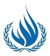

|
|
|
Browsing
Contact Us |
Campaigners |
Face to Face |
Tribune |
Interview |
News |
On the Web |
One Million |
Report
Farsi | Français | German | Italian | Spanish | العربية Also in this section
|
 UN Human Rights Chief Concerned by Iranian Crackdown on Human Rights DefendersWednesday 24 November 2010 View online : International Campaign for Human Rights in Iran GENEVA – The UN High Commissioner for Human Rights Navi Pillay on Tuesday expressed renewed concern for the fate of human rights defenders in Iran, particularly Ms. Nasrin Sotoudeh who was on hunger strike for several weeks in Tehran’s Evin Prison. “As we approach international Human Rights Day* on 10 December, the world will be focusing on situations where human rights activists are not free to organize or speak out,” the High Commissioner said. “I am very concerned that Nasrin Sotoudeh’s case is part of a much broader crackdown, and that the situation of human rights defenders in Iran is growing more and more difficult,” she added. Ms. Sotoudeh, a prominent human rights lawyer involved in defending many high profile cases, was arrested on 4 September and has reportedly been in solitary confinement since then. She is said to have been charged with national security offences. Following her first court appearance on 15 November, Ms. Sotoudeh reportedly broke the hunger strike she had conducted over a period of several weeks in protest at her detention. “I urge the Iranian authorities to review her case urgently and expedite her release,” Pillay said. Several other people who are currently detained are associated with the Centre for Human Rights Defenders (CHRD) founded by Nobel Laureate, Shirin Ebadi. Mr Mohamad Saifzadeh, a lawyer and co-founder of CHRD, was sentenced to nine years in prison and a ten-year ban on practicing law for “forming an association whose aim is to harm national security.” Other members of CHRD are being prosecuted on similar charges, or have been detained for shorter periods and prevented from travelling abroad. Most recently, on 13 November 2010, five lawyers were arrested in Tehran on security charges. Although two have reportedly been subsequently released, the other three are believed to be still in custody. Other organizations whose members have been arrested or convicted in recent months include the Committee for the Defence of Political Prisoners in Iran and the Committee of Human Rights Reporters, as well as individual lawyers representing clients in sensitive cases together with student activists and leaders. The High Commissioner urged the Iranian authorities to review their cases as well. “Freedom of speech and freedom of assembly are enshrined in international law,” she said, “most importantly in the International Covenant on Civil and Political Rights, which is a binding treaty that Iran has ratified.” On 1-2 December, OHCHR is scheduled to hold a judicial colloquium in Tehran with more than 30 Iranian judges and prosecutors on issues relating to the right to fair trial and the treatment of detainees. Several international experts and judges will participate in the seminar to share internationally recognized standards and experience on how judiciaries can protect human rights. “This is an important opportunity for direct engagement with Iranian judges on issues of concern, and to promote international standards in the administration of justice,” the High Commissioner said. “I encourage the Iranian authorities to open up greater space for human rights lawyers and activists who play a vital and constructive role in protecting human rights in all societies. They may express critical views – but criticism is not a crime.” * The theme for this year’s Human Rights Day on 10 December is “Human rights defenders who act to end discrimination.” |